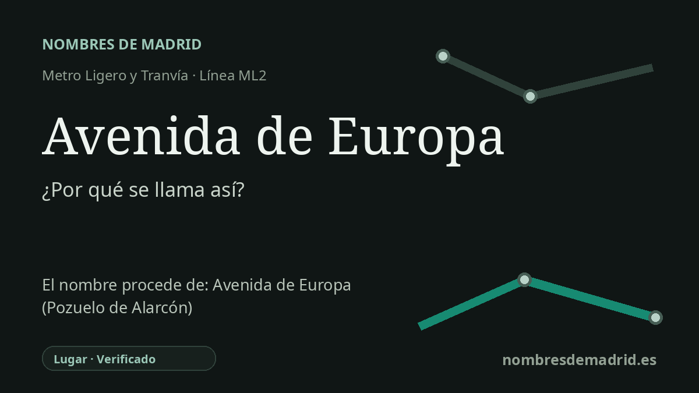

Publicado el · Investigación de Nombres de Madrid · Cómo verificamos cada origen · 8 fuentes consultadas
Respuesta rápida
La estación Avenida de Europa toma su nombre del bulevar de Pozuelo que cruza con la Avenida de la Comunidad de Madrid. La avenida acabó dando nombre a una zona residencial, comercial y empresarial moderna surgida del antiguo Plan Parcial Ampliación Casa de Campo.
La historia del nombre
El nombre de la estación es directo y local: Avenida de Europa se llama así por la Avenida de Europa de Pozuelo de Alarcón. La Comunidad de Madrid describe cómo la línea ML2 vuelve a entrar en túnel en este tramo para atravesar la Vía de las Dos Castillas y la Avenida de Europa, “que da nombre” a la estación subterránea. La parada se sitúa en el cruce de la Avenida de Europa con la Avenida de la Comunidad de Madrid, de modo que el nombre ferroviario procede del viario y no de una persona ni de un hecho histórico concreto.
Detrás de la avenida actual hay una gran operación urbanística moderna que durante años se identificó en los documentos como Plan Parcial Ampliación Casa de Campo. El Archivo Municipal de Pozuelo explica que este plan tuvo aprobación inicial en 1975, fue tratado de forma repetida por los órganos municipales en 1979 y registró sus primeras construcciones en 1985. El propio archivo señala que durante mucho tiempo las referencias de los edificios siguieron usando el descriptor “Plan Parcial de Ampliación de la Casa de Campo”, mientras los nombres de calle se iban imponiendo como forma cotidiana de localización.
El desarrollo fue ambicioso y polémico. El País informó en abril de 1981 de la aprobación del plan por el Ayuntamiento de Pozuelo, con una previsión de unas 7.500 viviendas en la nueva línea fronteriza dentro de Pozuelo y con cesiones de suelo vinculadas a la ampliación de la Casa de Campo. Aún en 2004, un anuncio del BOE identificaba una parcela municipal situada en Avenida de Europa 26 como parte del Plan Parcial Ampliación Casa de Campo, prueba de que la denominación urbanística y la dirección de la avenida convivieron durante décadas.
Hoy el nombre Avenida de Europa remite menos al expediente urbanístico antiguo y más a una zona reconocible de Pozuelo. El Ayuntamiento describe Avenida de Europa como un área con multitud de negocios en edificios de oficinas, despachos y locales, y sus páginas de movilidad la tratan como zona propia de estacionamiento regulado. En el entorno se aprecia claramente el motivo europeo en el callejero oficial: Alemania, Bélgica, Dinamarca, Francia, Grecia, Inglaterra, Irlanda, Portugal, Rumanía, Suecia y Suiza aparecen dentro de la zona Avenida de Europa, junto a nombres de ciudades como Atenas y Estocolmo.
La estación abrió con ML2 el 27 de julio de 2007, cuando la Comunidad de Madrid puso en servicio la línea de metro ligero Colonia Jardín-Pozuelo de Alarcón. Por tanto, su denominación está bien acreditada como un topónimo viario. El conjunto de calles europeas existe, pero no consta un acuerdo municipal o una memoria urbanística que confirme que el nombre se eligiera específicamente por la entrada de España en la Comunidad Económica Europea en 1986. Esa relación es sugerente, pero no está probada.